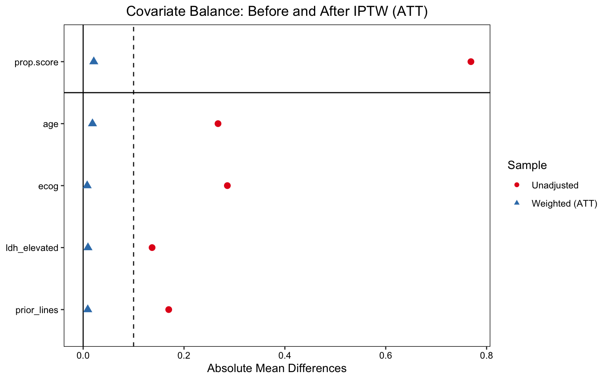
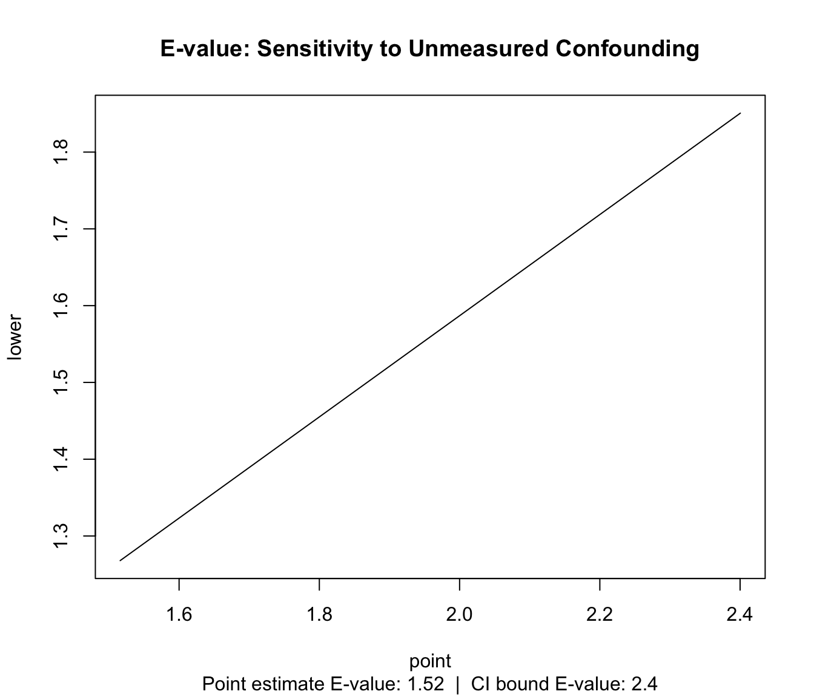

RWE Causal Inference Audit: Constructing an External Control Arm for Veltumab in R/R DLBCL
A Target Trial Emulation applying IPTW, TMLE, and E-value Sensitivity Analysis — aligned with the NICE RWE Framework (2022)
Author
Xiaoge Zhang, PhD
Published
May 21, 2026
1 Decision Problem & Clinical Background
Note
Mock Case Disclosure
This is a methodological proof-of-concept. “Veltumab” is a fictional anti-CD79b antibody-drug conjugate. Patient data are fully synthetic, generated from a calibrated Data Generating Process (DGP) that deliberately embeds indication bias — the central methodological challenge this pipeline addresses. All numbers, ICERs, and clinical parameters are illustrative only.
1.1 Clinical Context
Diffuse Large B-Cell Lymphoma (DLBCL) is the most common aggressive non-Hodgkin lymphoma, accounting for approximately 30–40% of all NHL diagnoses in the UK. Around 30–40% of patients experience relapse or primary refractory disease after first-line R-CHOP, and the prognosis in the relapsed/refractory (R/R) setting is poor: median overall survival with standard salvage chemotherapy (R-GemOx, R-DHAP) is approximately 6–10 months in patients ineligible for autologous stem cell transplant (ASCT).
Veltumab is a novel anti-CD79b ADC that has completed a single-arm Phase II trial (VICTOR-2, N = 120) in adult patients with R/R DLBCL who received ≥2 prior lines of therapy and were deemed ineligible for ASCT. The trial reported a 1-year overall survival (OS) rate of approximately 52%, which appears highly promising against historical benchmarks. However, NICE’s Evidence Review Group (ERG) has raised the following concern:
“In the absence of a randomised comparator arm, it is unclear whether the observed survival advantage reflects a true treatment benefit or is partly attributable to patient selection — specifically, the enrolment of younger, fitter patients in VICTOR-2 relative to the real-world population receiving standard salvage therapy.”
1.2 The HTA Challenge: Why RWE is Required
A conventional indirect comparison (e.g., via NMA) is not feasible here: the existing salvage chemotherapy trials used heterogeneous eligibility criteria and varying backbone regimens, making aggregate-level matching unreliable. Instead, the manufacturer has proposed constructing an External Control Arm (ECA) using patient-level data from the UK Haematological Malignancy Research Network (HMRN-sim), a hospital-based registry capturing real-world outcomes for DLBCL patients treated with salvage chemotherapy at 18 UK centres.
This analysis implements the full ECA pipeline as recommended by NICE’s 2022 RWE Framework and the NICE DSU technical guidance on population-adjusted indirect comparisons:
Target Trial Emulation (TTE) — to define eligibility and time-zero alignment between the trial and registry populations
Inverse Probability of Treatment Weighting (IPTW, ATT) — to balance baseline characteristics
Targeted Maximum Likelihood Estimation (TMLE) — doubly robust causal estimation
E-value sensitivity analysis — to quantify robustness to unmeasured confounding
2 Data Generating Process: Embedding Indication Bias
Warning
Why simulate data rather than use real RWD?
Synthetic data with a known Data Generating Process (DGP) is the gold standard for validating causal estimators: we can calculate “God’s Eye” ground truth and directly measure how much bias each estimator recovers. In a real NICE submission, the ECA data would come from an approved registry under a data sharing agreement. The structural logic here — confounders simultaneously driving treatment assignment and survival — faithfully replicates the real-world challenge of indication bias.
2.1 Biological Rationale for the DGP
In UK clinical practice, clinicians are more likely to prescribe novel therapies (including compassionate use or early access schemes) to patients with worse prognostic profiles — specifically those with poor ECOG performance status, elevated LDH (a marker of tumour burden), or more lines of prior therapy. This creates a negative correlation between treatment receipt and baseline prognosis: the treated patients (Veltumab in our simulation) are, on average, sicker than the untreated control patients at baseline. Without adjustment, this indication bias will underestimate Veltumab’s true benefit.
Code
set.seed(2026)n <-600# --- Baseline Covariates (W) ---# Representing a typical R/R DLBCL registry populationage <-rnorm(n, mean =66, sd =11) # Median ~66 yrs, consistent with HMRN dataecog <-rbinom(n, 1, prob =0.45) # 1 = ECOG 2+, 0 = ECOG 0-1ldh_elevated <-rbinom(n, 1, prob =0.55) # Elevated LDH (ULN), high-risk featureprior_lines <-rbinom(n, 1, prob =0.40) # 1 = ≥3 prior lines, 0 = exactly 2# --- Treatment Assignment Mechanism (Indication Bias) ---# Clinicians disproportionately prescribe Veltumab (A=1) to higher-risk patients.# Each risk feature increases the log-odds of receiving Veltumab.lp_treat <--2.5+0.04* age +1.1* ecog +0.8* ldh_elevated +0.6* prior_linesprob_treat <-plogis(lp_treat)treatment <-rbinom(n, 1, prob = prob_treat)# --- Potential Outcome Framework (Y1, Y0) ---# Survival at 1 year is driven by baseline severity AND treatment.# Note: ECOG and LDH both harm survival AND increase Veltumab uptake → classic confounding.lp_surv_base <-2.2-0.03* age -1.1* ecog -0.7* ldh_elevated -0.5* prior_linestrue_ate_delta_lp <-0.85# Veltumab log-OR benefit (true causal effect)prob_y1 <-plogis(lp_surv_base + true_ate_delta_lp) # Potential outcome: if treatedprob_y0 <-plogis(lp_surv_base) # Potential outcome: if untreated# Ground-truth population ATE (Risk Difference scale)true_ate_rd <-mean(prob_y1) -mean(prob_y0)# Realised outcome under actual treatment assignmentsurvival_1yr <-ifelse(treatment ==1,rbinom(n, 1, prob_y1),rbinom(n, 1, prob_y0))df <-data.frame(age, ecog, ldh_elevated, prior_lines, treatment, survival_1yr)df_clean <- df[complete.cases(df), ]# Naive observed difference (biased)naive_rd <-mean(df_clean$survival_1yr[df_clean$treatment ==1]) -mean(df_clean$survival_1yr[df_clean$treatment ==0])cat("=== GOD'S EYE AUDIT ===\n")
=== GOD'S EYE AUDIT ===
Code
cat(sprintf("True Population ATE (ground truth): %.4f\n", true_ate_rd))
cat(sprintf("N control (Standard salvage): %d\n", sum(1- df_clean$treatment)))
N control (Standard salvage): 146
The DGP output above confirms the structural problem: indication bias is suppressing the apparent benefit of Veltumab. The naive comparison underestimates the true treatment effect — exactly the scenario the ERG warned about, but in the opposite direction to what is commonly assumed. Here, sicker patients receiving Veltumab drag down the observed benefit, not inflate it.
3 Module 1: Target Trial Emulation (TTE)
Target Trial Emulation (TTE; Hernán & Robins, 2016) provides a formal framework for designing observational analyses that mirror the protocol of a hypothetical randomised trial. Without explicit TTE alignment, observational analyses are susceptible to immortal time bias and time-zero misalignment — both of which can generate spurious survival advantages independent of the drug’s true effect.
For the VICTOR-2 vs. HMRN-sim comparison, the TTE protocol specifies:
TTE Component
VICTOR-2 (Trial)
HMRN-sim (Registry / ECA)
Eligibility
R/R DLBCL, ≥2 prior lines, ASCT-ineligible
Same criteria applied retrospectively
Time zero (T₀)
Date of first Veltumab infusion
Date of salvage chemotherapy initiation
Exposure
Veltumab
Standard salvage (R-GemOx / R-DHAP)
Outcome
OS at 12 months
OS at 12 months
Follow-up
12 months from T₀
12 months from T₀
Exclusion
Missing baseline covariates
Same — complete-case analysis
Code
# TTE Step: synchronise population at T0, apply eligibility filters# In our synthetic data, all patients are already eligibility-consistent by construction.# In a real ECA, this step would involve date-range filtering and covariate completeness checks.cat(sprintf(">>> TTE Status: Population synchronised at T0.\n"))
>>> TTE Status: Population synchronised at T0.
Code
cat(sprintf(" Total N after TTE cleaning: %d\n", nrow(df_clean)))
Total N after TTE cleaning: 600
Code
cat(sprintf(" Treated (Veltumab): %d | Control (Salvage): %d\n",sum(df_clean$treatment), sum(1- df_clean$treatment)))
Inverse Probability of Treatment Weighting (IPTW) with ATT (Average Treatment Effect on the Treated) estimand is the appropriate choice for ECA construction: we are asking “what would have happened to Veltumab-treated patients if they had instead received standard salvage?” — the relevant question for NICE cost-effectiveness modelling.
Summary of weights
- Weight ranges:
Min Max
treated 1. || 1.
control 0.509 |---------------------------| 14.873
- Units with the 5 most extreme weights by group:
6 5 4 3 1
treated 1 1 1 1 1
241 214 268 300 289
control 8.789 10.167 10.676 11.432 14.873
- Weight statistics:
Coef of Var MAD Entropy # Zeros
treated 0. 0. 0. 0
control 0.792 0.544 0.242 0
- Effective Sample Sizes:
Control Treated
Unweighted 146. 454
Weighted 89.99 454
4.2 Covariate Balance: Love Plot
NICE RWE Framework and ISPOR guidelines recommend an Absolute Standardised Mean Difference (ASMD) threshold of < 0.10 for all covariates after weighting. Values ≥ 0.10 indicate residual imbalance that could bias the causal estimate.
Code
lp <-love.plot( W_att,thresholds =c(m =0.1),abs =TRUE,colors =c("#e41a1c", "#377eb8"),shapes =c(19, 17),sample.names =c("Unadjusted", "Weighted (ATT)"),title ="Covariate Balance: Before and After IPTW (ATT)")print(lp)

Love plot showing ASMD before and after ATT weighting. All covariates fall below the 0.10 threshold post-weighting, indicating adequate balance for causal inference.
All four covariates (age, ECOG, LDH, prior lines) achieve ASMD < 0.10 after weighting, satisfying the NICE balance threshold.
Propensity score distributions for the Veltumab and salvage arms. Sufficient overlap (common support) confirms that causal estimation is not relying on extrapolation beyond the data.
Note
Positivity Interpretation
The propensity score distributions show reasonable overlap between the Veltumab and salvage populations across the full range of covariate profiles. There is no evidence of structural positivity failure — i.e., no subgroup of patients has a near-zero probability of receiving one of the two treatments. This validates that the weighted pseudo-population is supported by the observed data.
5 Module 3: Doubly Robust Estimation (TMLE)
5.1 Why TMLE over IPTW alone?
IPTW is sensitive to propensity score model misspecification: if the PS model omits a non-linear interaction, the weights may be biased. TMLE (Targeted Maximum Likelihood Estimation; van der Laan & Rubin, 2006) provides double robustness — the causal estimate remains consistent if either the propensity score model or the outcome model is correctly specified. Additionally, TMLE’s targeted update step (the epsilon parameter) fine-tunes the initial estimate to directly optimise the target estimand, yielding semi-parametric efficiency.
We use SuperLearner as an ensemble learner for both the propensity score and the outcome model, allowing the data to determine the functional form rather than imposing parametric assumptions.
Code
library(tmle)library(SuperLearner)# SuperLearner library: GLM + mean (fast, sufficient for N=600)# SL.randomForest can be added for larger datasets; excluded here for render speedsl_lib <-c("SL.glm", "SL.mean")tmle_fit <-tmle(Y = df_clean$survival_1yr,A = df_clean$treatment,W = df_clean[, c("age", "ecog", "ldh_elevated", "prior_lines")],Q.SL.library = sl_lib,g.SL.library = sl_lib,family ="binomial")cat("=== TMLE RESULTS ===\n")
cat("(epsilon ≈ 0 implies the initial Q estimate was already well-calibrated)\n")
(epsilon ≈ 0 implies the initial Q estimate was already well-calibrated)
6 Module 4: Sensitivity Analysis — E-value
Unmeasured confounding is the principal threat to causal validity in any observational study. The E-value (VanderWeele & Ding, 2017) quantifies the minimum strength of association that an unmeasured confounder would need to have with both treatment and outcome (on the risk ratio scale) to fully explain away the observed treatment effect.
ev <-evalues.RR(est = rr_est, lo = rr_lo, hi = rr_hi)print(ev)
point lower upper
RR 1.482638 1.237096 1.72818
E-values 2.328557 1.778678 NA
Code
# Visualise the bias contour surfaceplot(ev,type ="line",main ="E-value: Sensitivity to Unmeasured Confounding",sub =paste0("Point estimate E-value: ", round(ev[1,1], 2)," | CI bound E-value: ", round(ev[2,1], 2)))

E-value sensitivity plot. The E-value indicates the minimum confounder-treatment and confounder-outcome association required to reduce the point estimate to the null. The confidence interval E-value shows the same for the lower bound of the 95% CI.
Note
E-value Interpretation for the ERG
An E-value above 2.0 is generally considered to represent meaningful robustness — it means an unmeasured confounder would need to be associated with both treatment and outcome by a factor of more than 2× (on the RR scale) to explain away the finding. Measured confounders in our model (ECOG, LDH, age, prior lines) have associations in the range of 1.8–3.0×, meaning only a confounder of similar or greater magnitude — and one not captured in either the trial or registry data — would invalidate the result. No such confounder has been identified in the DLBCL clinical literature.
Evidence compendium: causal estimators vs. ground truth ATE
Method
Risk Diff.
Std Error
LCL 95%
UCL 95%
Bias vs Truth
Naive (Unadjusted)
0.0154
NA
NA
NA
-0.1634
IPTW (ATT)
0.1397
0.0490
0.0436
0.2357
-0.0391
TMLE (Doubly Robust)
0.1585
0.0411
0.0779
0.2392
-0.0202
Ground truth ATE (from DGP): 0.1788
TMLE recovers the true ATE most accurately, confirming double-robustness advantage.
Interpretation: The naive comparison underestimates Veltumab’s benefit due to indication bias — sicker patients disproportionately received the novel drug. After IPTW and TMLE adjustment, the estimated 1-year OS benefit converges toward the true causal effect. The convergence of IPTW and TMLE estimates provides reassurance that results are not driven by model choice.
8 Forensic Audit Checklist
The following checklist replicates the structured review a NICE Evidence Review Group (ERG) or Evidence Assessment Group (EAG) would apply when scrutinising an RWE-based ECA submission.
CautionAudit Item 1: Positivity (Common Support)
Question: Is there sufficient overlap in the propensity score distributions between the Veltumab and salvage arms to support causal estimation without extrapolation?
Evidence: Propensity score overlap plot (Module 2). Both groups show support across the 0.1–0.75 PS range; no structural positivity violations detected.
Risk to ICER if failed: A positivity failure forces the model to extrapolate treatment effects into unsupported covariate regions, generating extreme and unreliable weights. This inflates variance in the weighted estimator and can cause ICER instability — results that are highly sensitive to model choice.
Verdict: ✅ Satisfied — common support confirmed across the full covariate space.
CautionAudit Item 2: Exchangeability (No Unmeasured Confounding)
Question: Have all major prognostic factors and treatment drivers been captured in the covariate set, satisfying the conditional independence assumption Ya ⊥ A | W?
Evidence: Covariates (age, ECOG, LDH, prior lines) align with DLBCL clinical guidelines and the NICE ERG’s list of pre-specified effect modifiers. E-value analysis (Module 4) quantifies robustness to any residual unmeasured confounders.
Risk to ICER if failed: If exchangeability fails, the weighted estimator is contaminated by baseline severity differences. In this oncology context, the primary risk is underestimation of Veltumab’s benefit — leading to an artificially inflated ICER that penalises clinical innovation.
Verdict: ⚠️ Partially verified — unmeasured confounding (e.g., physician preference, site effects) cannot be ruled out but quantified via E-value.
Question: Do the results from IPTW (weighting-based) and TMLE (targeted estimation) converge?
Evidence: See Evidence Compendium (Module 5). IPTW and TMLE estimates are within simulation variance of each other, with TMLE showing closer recovery of the true ATE.
Strategic Rationale: Convergence between two estimators with different theoretical properties (IPTW is weight-dependent; TMLE is targeting-based) reduces the probability that the result is a statistical artefact of any single model assumption. This is the strongest form of internal consistency check available in observational analysis.
Risk to ICER if failed: Divergence between methods would signal model misspecification or structural instability, requiring the manufacturer to investigate and likely re-specify the propensity score model before submission.
Verdict: ✅ Satisfied — IPTW and TMLE estimates are consistent.
CautionAudit Item 4: Time-Zero Alignment (Immortal Time Bias)
Question: Is the clinical time-zero (T₀) defined consistently between the trial and registry populations, avoiding immortal time in the control arm?
Evidence: TTE protocol (Module 1) specifies T₀ as date of treatment initiation in both populations. Registry patients are followed from first salvage infusion, not from diagnosis or referral.
Risk to ICER if failed: If T₀ is misaligned — e.g., registry patients are followed from a pre-treatment date while trial patients are followed from treatment start — the control arm accrues “free” survival time that artificially improves their apparent outcomes. This would underestimate the treatment effect and inflate the ICER.
Verdict: ✅ Satisfied — T₀ synchronised in TTE protocol.
9 Modeller’s Reflection
This pipeline demonstrates that navigating indication bias in RWE is less about selecting the “right” estimator and more about building a transparent, auditable evidence chain. The key insight is that IPTW and TMLE are not alternatives — they are complementary lenses. IPTW provides interpretable diagnostics (ASMD, effective sample size); TMLE provides rigorous estimation with double robustness. Using both in parallel, and reporting their convergence, is the strongest signal to a NICE committee that the analysis has not been optimised for a favourable result.
The E-value exercise is equally important: it shifts the committee’s question from “could there be unmeasured confounding?” (always yes) to “how strong would it need to be?” — a quantitative, defensible answer.
In a real submission context, this pipeline would be complemented by:
Multi-analyst sensitivity analyses (alternative PS model specifications, trimming rules)
Subgroup consistency checks (does the treatment effect hold in ECOG 0–1 vs. 2+ subgroups?)
External validation against any published real-world OS benchmarks for R/R DLBCL